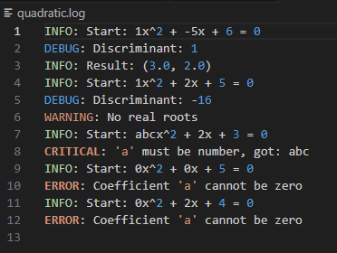
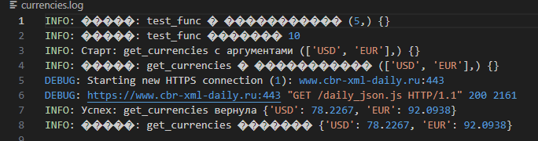
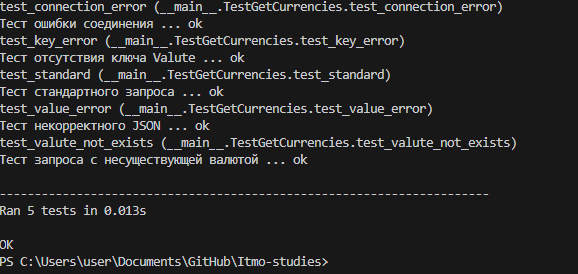

Отчёт по лабораторной работе №7
Выполнил Богун Андрей Витальевич
Декораторы с параметрами. Логирование
1. Исходный код декоратора с параметрами
Файл: logger.py
import logging
import io
import functools
import sys
logging.basicConfig(
filename= "currencies.log",
level= logging.DEBUG,
format="%(levelname)s: %(message)s"
)
def logger(func=None, *, handle= sys.stdout):
"""Если декоратор вызван с параметрами: @logger(handle=...)"""
if func is None:
def wrapper(f):
return logger(f, handle=handle)
return wrapper
"""Если декоратор вызван без параметров: @logger"""
@functools.wraps(func)
def inner(*args, **kwargs):
"""Логируем начало вызова"""
start_msg = f"Старт: {func.__name__} с аргументами {args} {kwargs}"
if isinstance(handle, logging.Logger):
handle.info(start_msg)
else:
handle.write(f"INFO: {start_msg}\n")
try:
"""Выполняем функцию"""
result = func(*args, **kwargs)
"""Логируем успешное завершение"""
end_msg = f"Успех: {func.__name__} вернула {result}"
if isinstance(handle, logging.Logger):
handle.info(end_msg)
else:
handle.write(f"INFO: {end_msg}\n")
return result
except Exception as e:
"""Логируем ошибку"""
error_msg = f"Ошибка: {func.__name__} - {type(e).__name__}: {str(e)}"
if isinstance(handle, logging.Logger):
handle.error(error_msg)
else:
handle.write(f"ERROR: {error_msg}\n")
"""Повторно выбрасываем исключение"""
raise
return inner
Особенности реализации декоратора с параметрами
Декоратор logger реализован с поддержкой нескольких вариантов вызова, Преимущества такого подхода: Единый интерфейс для разных способов вызова, Гибкость настройки обработчика логирования, Сохранение информации об оригинальной функции
2. Исходный код get_currencies (без логирования)
Файл: lab7.py
import requests
import sys
def get_currencies(currency_codes: list, url="https://www.cbr-xml-daily.ru/daily_json.js", handle= sys.stdout) -> dict:
try:
try:
response = requests.get(url, timeout=10)
response.raise_for_status()
""" Проверка HTTP ошибок"""
except requests.exceptions.ConnectionError as e:
raise ConnectionError(f"API недоступен: {e}") from e
except requests.exceptions.Timeout as e:
raise ConnectionError(f"Таймаут подключения к API: {e}") from e
except requests.exceptions.RequestException as e:
raise ConnectionError(f"Ошибка запроса к API: {e}") from e
try:
data = response.json()
except ValueError as e:
raise ValueError(f"Некорректный JSON в ответе API: {e}") from e
response.raise_for_status()
"""Проверка на ошибки HTTP"""
data = response.json()
currencies = {}
if "Valute" in data:
for code in currency_codes:
if code in data["Valute"]:
currencies[code] = data["Valute"][code]["Value"]
else:
currencies[code] = f"Код валюты '{code}' не найден."
else:
raise KeyError("В ответе API отсутствует ключ 'Valute'")
return currencies
except requests.exceptions.RequestException as e:
print(f"Ошибка при запросе к API: {e}", file=handle)
handle.write(f"Ошибка при запросе к API: {e}")
Преимущества подхода с декоратором: Разделение ответственности: функция отвечает только за получение курсов, декоратор — за логирование, Повторное использование, Можно легко менять способ логирования (файл, консоль, удалённый сервис), Основная функция не засорена логикой логирования, Соблюдение принципа DRY
3. Демонстрационный пример
Исходный код демонстрационного примера
Файл: Example.py
import logging
import math
import functools
# Настройка логирования
logging.basicConfig(
filename="quadratic.log",
level=logging.DEBUG,
format="%(levelname)s: %(message)s"
)
# Декоратор для логирования
def log_equation(func):
@functools.wraps(func)
def wrapper(a, b, c):
logging.info(f"Start: {a}x^2 + {b}x + {c} = 0")
# Проверка типов
for name, val in zip(("a", "b", "c"), (a, b, c)):
if not isinstance(val, (int, float)):
logging.critical(f"'{name}' must be number, got: {val}")
raise TypeError(f"Coefficient '{name}' must be numeric")
if a == 0:
logging.error("Coefficient 'a' cannot be zero")
raise ValueError("a cannot be zero")
try:
result = func(a, b, c)
if result is None:
logging.warning("No real roots")
else:
logging.info(f"Result: {result}")
return result
except Exception as e:
logging.error(f"Error: {type(e).__name__}: {str(e)}")
raise
return wrapper
# Чистая функция без логирования внутри
@log_equation
def solve_quadratic(a, b, c):
"""Solve quadratic equation ax² + bx + c = 0"""
d = b*b - 4*a*c
logging.debug(f"Discriminant: {d}")
if d < 0:
return None
if d == 0:
return (-b / (2*a),)
return (
(-b + math.sqrt(d)) / (2*a),
(-b - math.sqrt(d)) / (2*a)
)
if __name__ == "__main__":
print("=== Демонстрация уровней логирования ===\n")
# 1. INFO: два корня
print("1. Два корня (INFO): x² - 5x + 6 = 0")
try:
result = solve_quadratic(1, -5, 6)
print(f" Результат: {result}")
except Exception as e:
print(f" Ошибка: {e}")
# 2. WARNING: дискриминант < 0
print("\n2. Дискриминант < 0 (WARNING): x² + 2x + 5 = 0")
try:
result = solve_quadratic(1, 2, 5)
print(f" Результат: {result}")
except Exception as e:
print(f" Ошибка: {e}")
# 3. ERROR: некорректные данные
print("\n3. Некорректные данные (ERROR): 'abc'x² + 2x + 3 = 0")
try:
result = solve_quadratic("abc", 2, 3)
print(f" Результат: {result}")
except Exception as e:
print(f" Ошибка: {e}")
# 4. CRITICAL: невозможная ситуация
print("\n4. Невозможная ситуация (CRITICAL): 0x² + 0x + 5 = 0")
try:
result = solve_quadratic(0, 0, 5)
print(f" Результат: {result}")
except Exception as e:
print(f" Ошибка: {e}")
# 5. WARNING: линейное уравнение
print("\n5. Линейное уравнение (WARNING): 0x² + 2x + 4 = 0")
try:
result = solve_quadratic(0, 2, 4)
print(f" Результат: {result}")
except Exception as e:
print(f" Ошибка: {e}")
print("\n=== Проверьте файл quadratic.log ===")
4. фрагменты логов
5. Тесты
Исходный код тестов
import unittest
import requests
from lab7 import get_currencies
from unittest.mock import patch, Mock
class TestGetCurrencies(unittest.TestCase):
def test_standard(self):
"""Тест стандартного запроса"""
mock_response = {
"Valute": {
"USD": {"Value": 76.0937},
"EUR": {"Value": 88.7028},
"JPY": {"Value": 49.0737}
}
}
with patch('requests.get') as mock_get:
mock_get.return_value.status_code = 200
mock_get.return_value.json.return_value = mock_response
result = get_currencies(['USD', 'EUR', 'JPY'])
expected = {'USD': 76.0937, 'EUR': 88.7028, 'JPY': 49.0737}
self.assertEqual(result, expected)
def test_valute_not_exists(self):
"""Тест запроса с несуществующей валютой"""
mock_response = {
"Valute": {
"USD": {"Value": 76.0937},
"EUR": {"Value": 88.7028},
"JPY": {"Value": 49.0737}
}
}
with patch('requests.get') as mock_get:
mock_get.return_value.status_code = 200
mock_get.return_value.json.return_value = mock_response
result = get_currencies(['USD', 'EUR', 'JPY', 'NNG'])
self.assertAlmostEqual(result['USD'], 76.0937)
self.assertAlmostEqual(result['EUR'], 88.7028)
self.assertAlmostEqual(result['JPY'], 49.0737)
self.assertEqual(result['NNG'], "Код валюты 'NNG' не найден.")
def test_connection_error(self):
"""Тест ошибки соединения"""
with patch('requests.get') as mock_get:
mock_get.side_effect = requests.exceptions.ConnectionError("API недоступен")
with self.assertRaises(ConnectionError):
get_currencies(['USD', 'EUR', 'JPY'], url='https://invalid.url')
def test_value_error(self):
"""Тест некорректного JSON"""
with patch('requests.get') as mock_get:
mock_response = Mock()
mock_response.status_code = 200
mock_response.json.side_effect = ValueError("Invalid JSON")
mock_get.return_value = mock_response
with self.assertRaises(ValueError):
get_currencies(['USD', 'EUR', 'JPY'])
def test_key_error(self):
"""Тест отсутствия ключа Valute"""
mock_response = {
"NotValute": {}
}
with patch('requests.get') as mock_get:
mock_get.return_value.status_code = 200
mock_get.return_value.json.return_value = mock_response
with self.assertRaises(KeyError):
get_currencies(['USD', 'EUR', 'JPY'])
if __name__ == "__main__":
unittest.main(verbosity=2)


